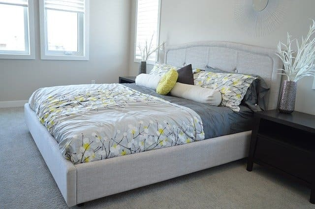
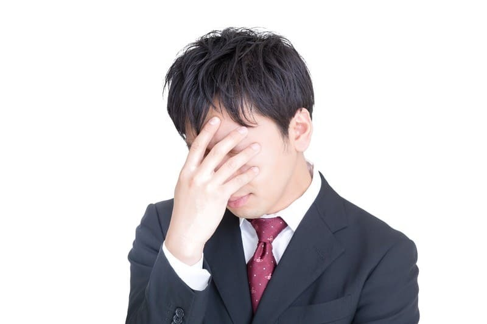
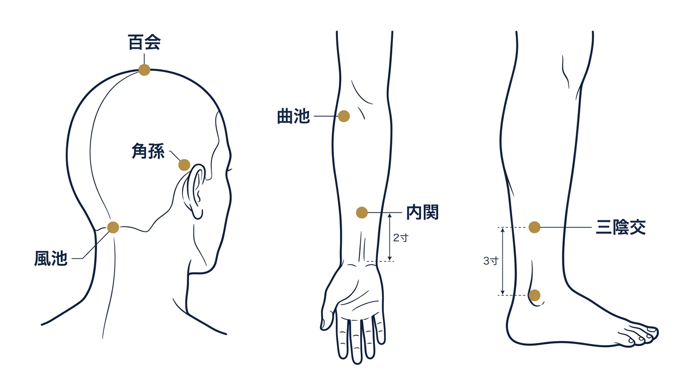

ノイローゼの鍼灸
器質的異常がないのに続く強い不安や身体の不調に対し、専門医の治療と休息を前提に、自律神経と緊張を穏やかに整えます。
まず知っておきたい要点と改善の流れ
ノイローゼ（神経症）は、身体に器質的な異常がないにもかかわらず、強い不安を中心に強迫観念や各種恐怖症、動悸・息苦しさなどの身体症状が現れる状態の総称です。長期間の環境不適応や人間関係・仕事・家庭の悩みといった明確な心理的ストレスや性格傾向が関与します。こじらせないための十分な休息、アルコール・ニコチン・カフェイン過多の回避に加え、専門医での薬物療法・精神療法・行動療法が基本です。（公式解説）
このようなお悩みはありませんか？
- ✓はっきりした身体の病気がないのに動悸や息苦しさ・しびれが続く
- ✓戸締まりや手洗いなど同じことが気になり何度も確認してしまう
- ✓人間関係や仕事の悩みが頭から離れず強い不安が長引いている
- ✓休んでも緊張が抜けず、カフェインや嗜好品に頼りがちになる
当院の施術アプローチ・改善の流れ
なぜ鍼灸で改善へ向かうのか？（作用機序の図解）
ノイローゼに対する鍼灸は、体性-自律神経反射による交感・副交感神経の切替機序を通じて、お体本来の回復力を引き出します。

首肩・みぞおち・手足の過緊張ポイントへ、交感神経を刺激しすぎない優しい刺激を行います。
体性-自律神経反射を通じて脳幹の迷走神経核へ働きかけ、心拍変動（HF/SDNN）を整えます。
過剰なコルチゾール分泌や過覚醒状態を落ち着かせ、深い呼吸と入眠スイッチを引き出します。
「活動（昼）」と「休息（夜）」のメリハリが戻り、動悸・不眠・倦怠感の波が穏やかになります。
院長YouTube解説・関連動画
ノイローゼは神経症の1つ

ノイローゼは神経症の1つで、心の病気の中でもよく聞く言葉です。しかし、実際にノイローゼという病気そのものについて理解し、言葉を使うことは非常に少ないです。
躁うつ病や分裂病である可能性がある精神障害の全般に対してノイロ－ゼという言葉を使うことも多い傾向があります。多くの人の中で神経症自体の概念は明瞭ではないとも言えます。
これは、専門家や時代や国、原因となっていることや症状が精神的にも身体的にも複雑であることが原因です。
確かに原因や症状は色々あり複雑ですが、共通点があり、最も大きな共通点は、症状の中心にあるものが不安ということです。
ノイローゼの症状は様々
ノイローゼでは様々な症状が起こります。ノイローゼで起こる主な症状の1つ目は強迫性障害です。
これは、特定の行為や思考から離れることができずに日常生活に支障が起きます。鍵を掛けたか何回も確認するなど、1つのことを非常に心配してしまうことなどが当てはまります。
ノイローゼで起こる主な症状の2つ目は不安神経症です。心の症状では過剰な不安感が起こり、体の症状では動悸や息苦しさ、手足のしびれが起こります。
多くの場合は変動性で、特にストレスを受けたときなどに悪くなります。これは長い年月ににわたって続く症状です。
ノイローゼで起こる主な症状３つ目は恐怖症です。これは強迫性障害とも言われ、特定の外的な状況に対して現実的ではない激しい不安と恐怖感が続いてしまう状態です。
広場恐怖症や社会恐怖症、対人恐怖症などがあります。特に対人恐怖症は神経質傾向、赤面恐怖症、表情恐怖症、視線恐怖症の順番で恐怖症が強くなっていきます。
高いところが怖い高所恐怖症、閉鎖された空間が怖い閉所恐怖症、水が怖い恐水症、クモ、ヘビ、ネズミなどの動物が怖い動物恐怖症なども恐怖症として挙げられます。

ノイローゼは、日常的に起こり得る軽い心の不調と、精神科に行き改善するべきうつ病などの心の病気との間の状態とも言えます。日常生活の中で簡単に解決する心の不調よりノイローゼは深刻な状態なのです。
原因や症状にもよっても様々ですが、改善が必要な心の病気など他の精神疾患がない場合は、専門家の力を借りなくても、自分で対処することも可能です。
どちらにしても無理をせず、しっかり休息を取り、こじらせないようにすることが最も重要です。
ノイローゼを疑うような心の不調が場合は、こじらせてうつ病などにつながらないためにも、日常生活を送る上で心の病気のリスクとなる要因は避けましょう。
中枢神経系に働く物質であるアルコールやニコチン、コーヒーなどに含まれるカフェインなどの量がいつもより増えていないかどうかということは心に不調を感じている時に注意が必要なポイントの１つになります。
このようなものは場合によっては依存症につながってしまう可能性もあるため、十分に注意してください。
辛いと感じた時は病院に相談しにいくことをお勧めします。抗不安剤や抗うつ剤などの薬による改善や精神療法や行動療法、暗示療法などの方法で改善を試みることができます。
なかなか解決しない問題を抱えているとき、ノイローゼのような症状が起こりやすくなります。もちろん状況によって最善の対処法は違いますが、基本的には誰にも相談せず１人で悩みを抱えこむことは避けるべきです。
１人で悩みを抱えてしまうと、気持ちがより落ち込みやすくなるだけでなく、自分の視点だけで物事を考えてしまい良い解決策があってもなかなか気がつくことができなくなる可能性もあります。
悩みを言葉にするだけで心が軽くなる可能性も、近しい人から良いアドバイスが聞ける可能性もあります。悩みや問題を抱えた時、誰かに相談することは有効な対処法です。
ノイローゼには、きちんと原因があります。しかし、同じ出来事が起こった時ノイローゼになる人もいればならない人もいます。出来事を受ける人によって、不安の程度に差があるからです。
出来事を受ける人の不安の程度の差は、性格がによって変わるといわれています。どのようなタイプの人がノイローゼになりやすいのかというと、偏った性格の持ち主です。
神経質、感じやすく傷つきやすい、心配性、完全主義、自信がない、潔癖症、確認癖がある、依存的である、引っ込み思案、内気、小心、融通がきかない、感情的になりやすい、自己中心的な人などがノイローゼになりやすい性格だと言われています。

自律神経のお悩みのツボ図解とセルフケア
実際の施術ではお一人おひとりの体質・症状に合わせて選穴しますが、自律神経調整（心拍変動HRV・迷走神経・睡眠/ストレスケア）の臨床でよく用いられる代表的なツボの目安です。

📌 代表的なツボの詳細一覧表を開く（6穴） ▼
| ツボ名 | 位置の目安 | 主な狙い | セルフケアの注意点 |
|---|---|---|---|
| 曲池（きょくち） | 肘を曲げた外側のシワ先端 | 交感神経の過緊張リセット、上肢・頭部の熱感緩和 | 痛気持ちいい強さで10秒ほど。しびれが出たら弱める |
| 風池（ふうち） | 後頭骨下縁、耳後ろの骨の内側くぼみ | 頸部筋緊張・頭痛・めまい・眼精疲労の自律神経ケア | 頸動脈側へずらさず斜め内側へ優しく |
| 内関（ないかん） | 手首内側横ジワから肘側へ指3本分、2腱の間 | 動悸・息苦しさ・吐き気・胃腸不調の緩和 | 衣類の上からのカイロ温熱や軽い指圧が安全 |
| 百会（ひゃくえ） | 両耳上端を結ぶ線と正中線の交点 | 頭重感・不眠・精神的緊張・のぼせの調整 | 中指腹で心地よく数秒。頭痛増悪時は中止 |
| 角孫（かくそん） | 耳を前に折ったとき先端が側頭部に当たる位置 | 側頭部の循環改善、締め付け頭痛・だるさ緩和 | 吐く息に合わせじわっと圧迫（強揉み回避） |
| 三陰交（さんいんこう） | 内くるぶし頂点から指4本分上、すね骨の後ろ際 | 冷え・ホルモンバランス・睡眠の質改善 | 妊娠中の強い刺激・お灸は禁忌 |
国際査読論文の科学的エビデンス
国際的な医学データベース（PubMed・Cochrane等）で報告されている自律神経調整（心拍変動HRV・迷走神経・睡眠/ストレスケア）領域の代表的な査読済み鍼灸研究をまとめています（標準治療との併用や研究上の限界を含めて正確に掲載）。
📚 査読論文データ・PubMed出典リンクを開く（4件） ▼
| 年・研究デザイン | 対象・規模 | 主な結果 | 限界・出典 |
|---|---|---|---|
| 2025年 メタ解析 | 自律神経不調を伴う疾患 10 RCTs（n=744） | 全体適応力指標SDNNが有意改善（MD 13.59, p=0.0091）、重篤な有害事象ゼロ。 | LF・HF・LF/HFは有意差なし、異質性高。 Front Neurosci (PMID: 41230507) |
| 2023年 メタ解析 | 手技鍼 vs シャム鍼 9 RCTs | 実鍼群でのみ施術前後の副交感神経指標HFおよびLF/HF比が有意変化。 | 一次研究の質・異質性にばらつきあり。 Complement Ther Med (PMID: 36494036) |
| 2024年 RCT | 食後愁訴症候群（PDS）解析51名 | 症状反応率（p=0.001）、迷走神経活性HF上昇（p≤0.001）、LF/HF低下（p≤0.001）。 | 単施設・小規模（脳腸相関の根拠）。 Chin Med (PMID: 39568071) |
| 2022年 国内RCT | 更年期女性 48名（日本式鍼7穴×4週） | 鍼群の79%で心拍数が5%以上低下（P<0.01）、鍼中のHF上昇・起立時LF/HF低下を確認。 | 更年期女性限定・4週間の短期評価。 Med Acupunct (PMID: 36311889) |
参考文献・出典
- 銀座そうぜん鍼灸院「ノイローゼの公式解説ページ」
- 2025年 メタ解析（自律神経不調を伴う疾患 10 RCTs（n=744））— Front Neurosci (PMID: 41230507)
- 2023年 メタ解析（手技鍼 vs シャム鍼 9 RCTs）— Complement Ther Med (PMID: 36494036)
- 2024年 RCT（食後愁訴症候群（PDS）解析51名）— Chin Med (PMID: 39568071)
- 2022年 国内RCT（更年期女性 48名（日本式鍼7穴×4週））— Med Acupunct (PMID: 36311889)
よくある質問（FAQ）
Q. 強いパニック発作や日常生活が困難なほどの不安がある時期でも受けられますか？▼
Q. 病院のカウンセリングや服薬と並行できますか？▼
あわせて読まれる関連疾患（自律神経のお悩み）
入眠困難や中途覚醒などが続き日中の不調を招く状態です。自律神経の過緊張を鎮め、心身が休息しやすい環境を補完的に整えます。
続く過度な不安や動悸・不眠などの身体症状に対し、自律神経と東洋医学の気滞ケアで心身の落ち着きをサポートします。
物を捨てる行動が止まらない背景にある不安や過緊張に対し、自律神経と感情のバランスを整える鍼灸ケアを行います。
検査で異常がなくても重い病気と思い込み強い不安が続く心気症。専門医の評価を前提に、不安と身体症状の悪循環を補完的に和らげます。
不合理と分かっていても不安や確認行為が止まらない強迫性障害。専門医の治療を軸に、張り詰めた自律神経の緊張緩和を補完的に支えます。
昼食時に一人になることへの強い不安や対人プレッシャーで心身が緊張する状態。必要に応じた相談と並行し、膻中等で自律神経を整えます。
おひとりで悩まず、まずはご相談ください
銀座本院・川口・大宮・横浜・博多・田無の各院でご予約を承っております。